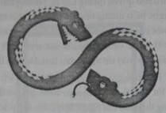

Chỉ gõ xuống thật nhẹ...
Jake nằm sấp, mặt trời nung cháy khoảng lưng cậu. Suốt cả ngày thứ bảy cậu đã ở chỗ mỏm đá sau nhà. Các phiến đá bên dưới cậu phần lớn phẳng lì, nhưng giờ đây, mỗi chỗ lồi nhẹ trên bề mặt đều nhô lên thành u bướu.
Môi cậu mím chặt, mặt nhăn nhăn nhó nhó - không phải vì đau mà vì tập trung cao độ.
Không được làm hư mẫu vật.
Những vật hóa thạch từ thời cổ sinh trông vừa giống một con cua chết khô vừa giống một mảnh tàu vũ trụ của người ngoài hành tinh, cậu thậm chí còn có thể nhận ra một cặp ăng-ten bé tí.
Đây là một mẫu hiếm trong vùng. Nó trải ra cũng dài gần ba inch, một mẫu vật đáng chú ý của loài Isotelus maximus, thường được biết đến với cái tên bọ ba thùy.
Một khám phá kinh ngạc!
Jake một tay cầm cái đục nhọn, tay còn lại cầm một cây búa nhỏ. Chỉ cần một cú đập nhẹ chính xác nữa là tách được mảnh hóa thạch ra khỏi vùng đá xung quanh. Sau đó cậu sẽ có thể đem mẫu vật về phòng và làm sạch trong điều kiện thích hợp, một việc đòi hỏi sự tỉ mỉ nhiều hơn thế này.
Cậu định vị cái đục, điều hòa nhịp thở và nhấc búa lên. Cậu muốn nhắm mắt lại, nhưng e thế cũng chẳng ích gì.
Bắt đầu nào...
Cậu vung búa lên và - "CẬU JAKE NGHE RÕ TRẢ LỜI", cậu giật mình nện búa xuống ngón tay cái, ngay giữa khớp ngón.
"CẬU CÓ NGHE THẤY TÔI KHÔNG?"
"CẬU CÓ NGHE THẤY TÔI KHÔNG?"
Tiếng kêu choe chóe phát ra từ cái đài thu âm hai chiều, đặt chênh vênh ở mỏm đá gần khuỷu tay cậu.
Jake vẩy vẩy bàn tay bị thương của mình và lăn qua một bên. Cậu nhấc máy thu âm lên và nhấn nút nhận tín hiệu. "Có chuyện gì vậy, chú Edward?" Cậu hậm hực hỏi.
"BỮA TỐI SẮP XONG RỒI."
Bữa tối?
"VÀ CHÚ NGHĨ CHÁU CẦN TẮM RỬA MỘT LÚC."
Jake nhìn lên bầu trời, cuối cùng cậu cũng nhận ra mặt trời đã lặn nãy giờ, bóng tối đã dần dần loang khắp. Mải chú tâm, cậu không nhận ra đã muộn đến vậy.
Cậu đưa đài thu âm lên miệng. "Được rồi. Cháu sẽ về ngay."
Cậu nấn ná thêm một lúc chưa chịu rời đục và búa để lấy cho bằng được mảnh hóa thạch bọ ba thùy, bỏ vào túi. Xong việc cậu lật người lại, thấy ngay một cái mõm lòng thòng nước dãi và một cái mũi to đùng, đen sì, ẩm ướt đang gí sát mặt mình. Hơi thở hôi hổi phả xuống cậu. Một miếng nước dãi to tướng rớt xuống ngay trán cậu.
Eo ơi.
Jake dựng dậy, hất con chó săn basset ra khỏi mặt mình. "Kinh quá, Watson. Mùi của mày đem đi diệt rồng được đó."
Jake ngồi dậy.
Phớt lờ mấy lời mắng mỏ, Watson lướt cái lưỡi dài ươn ướt lên khắp má Jake.
"Ờ, thế được hơn đó. Lây mầm bệnh cho tao."
Nói vậy nhưng Jake vẫn toét miệng cười và gãi mạnh tai trái con chó già, nó đang tung tẩy chân sau vẻ hài lòng lắm. Watson đã xấp xỉ mười bốn tuổi và là một thành viên của gia đình Ransom, thậm chí còn kì cựu hơn cả Jake. Mẹ Jake đã cứu Watson từ tay một gã người Anh chuyên nuôi chó săn cáo, gã ta định dìm chết chú chó nhỏ vì cái chân trước cong cong bẩm sinh của nó. Watson vẫn đi đứng được, dù hơi khập khiễng, nhưng như mẹ cậu vẫn luôn nói, nhân vô thập toàn.
Tuy bị tật ở chân, nhưng hễ Watson nhìn thấy một con sóc là nó lao nhanh đến như một tia chớp. Jake vẫn cầm theo cái tu huýt gọi chó để tránh không lạc mất chú chó săn trong rừng. Nhất là khi thị lực của Watson càng ngày càng giảm dần theo tuổi.
"Thôi nào, Watson. Đi ăn thôi nào."
Nghe tới ăn, chú chó săn vẫy vẫy đuôi. Mũi nó hếch lên cao, khịt khịt. Riêng giác quan ấy không bao giờ giảm đi theo tuổi. Chắc giờ nó đã biết dì Matilda đang nấu món dưới bếp.
Jake chăm chú nhìn hai mẫu hóa thạch khác cậu muốn thu nhặt. Chắc phải đợi đến mai rồi. Nắng đã tắt, mà cậu không muốn phạm bất kì một sai lầm nào. Đó là những gì cha đã dạy cậu. Một nhà khảo cổ học phải kiên nhẫn, cậu nghe thấy tiếng cha vang lên trong đầu.
Đừng hối lịch sử... Nó chẳng bỏ đi đâu được cả...
Theo lời khuyên ấy, Jake thu dọn đồ nghề và về cùng Watson.
Cậu leo ra khỏi mỏm đá và hướng về nhà.
Trang viên Ravensgate trải dài phía trước Jake, năm mươi hai mẫu Anh trập trùng đồi uốn lượn, điểm đây đó là những khu rừng thích đường và sồi đen.
Jake hướng xuống một con đường vương vãi mạt gỗ. Điền trang này đã truyền qua hàng mấy đời, từ tiền bối Ransom đầu tiên bén rễ ở đây ngay sau ngày kí Tuyên ngôn Độc lập. Cụ tổ là nhà khảo cổ Ai cập nổi tiếng, và thế hệ sau lại tiếp bước cha ông mình, tất cả họ đều là nhà thám hiểm theo cách này hay cách khác.
Khi Jake vừa quẹo khúc cua, cậu đã thấy ngôi nhà hiện ra. Ởchính giữa khu vườn kiểu Anh mênh mông là một lâu đài nho nhỏ với những tháp canh bằng đá, những đầu hồi bằng gỗ, mái lợp bằng đá và trang trí bằng đồng đỏ, những cửa sổ lắp kính nhiều màu và những bản lề bằng đồng thau. Gần phía trước, một đường lớn vòng cung rải đá dăm dài đến tận cổng chính, cánh cổng có những cột trụ, trên đỡ một đôi quạ đá chạm khắc, chúng trùng tên với cái điền trang này.
Từ khi cha mẹ cậu biến mất, căn nhà càng trở nên hoang vắng hơn. Dây trường xuân lơ thơ, vàng úa những mảng tường, mái nhà rơi mất một vài viên ngói, một khoảng cửa sổ được chằng chịt băng keo và bản gỗ vá víu lại. Dường như một cái gì đó thân thương đã bị tước khỏi mảnh đất này, khỏi ngôi nhà và nhất là khỏi trái tim của Jake.
Jake dẫn Watson đi một bên, tiến lại cửa sau. Cậu đẩy cửa vào bên trong, tới một tiền phòng nhỏ lát gạch, cậu đập đập đôi giày cho đỡ bụi và phủi quần áo rồi treo túi mẫu vật cùng những dụng cụ lên móc.
Một cái đầu thập thò ở phòng kế bên. Dì Matilda. Mái tóc quăn bạc phơ của dì khuôn lại gương mặt nhăn nheo, gần như mái tóc của dì được bọc lại dưới chiếc mũ thợ bánh. Dì không bước hẳn vào phòng. Dì ít khi làm vậy. Dì Matilda luôn luôn có vẻ bận rộn, chẳng mấy khi vào hẳn một phòng nào cả.
"A, cháu đây rồi, cháu yêu. Dì mới vừa múc xúp ra. Cháu nhanh tắm rửa đi." Dì hơi trề môi vẻ không bằng lòng. "Còn chị cháu ở đâu không biết?"
Hỏi chỉ mà hỏi thôi chứ dì chẳng đợi trả lời, nhất là với Jake nữa. Vì cậu và Kady chẳng còn đi cùng với nhau nữa. Dì chỉ than thở vậy.
"Cháu đi tắm rồi sẽ xuống ngay, thưa dì Matilda."
"Nhanh lên nhé." Dì biến đi trông chừng cái bếp lò và hai cô hầu gái. Nhưng rồi dì lại thò đầu ra nữa. "Này, Edward dặn cháu ghé qua thư viện trước bữa ăn tối đấy. Hôm nay người ta gửi hàng bưu điện gì đến đấy."
Sự tò mò thúc giục bước chân của Jake. Watson thì chẳng hào hứng gì, cậu đi vòng quanh nhà bếp để tìm mẩu vụn thức ăn
Thư viện ở ngay gần phòng nghỉ chính. Để đến đó, Jake đi xuống sảnh chính, sảnh chạy dài từ phía sau nhà đến tận trước nhà. Một bên tường treo những bức tranh sơn dầu chân dung của tổ tiên, cả đàn ông, đàn bà, đến tận cụ tổ dòng họ là ngài Bartholonew với bộ râu xồm xoàm và đôi mắt nheo nheo trong nắng, đứng kế bên một con lạc đà. Mọi bức chân dung đều nhìn xuống qua sảnh chính hướng đến ngăn trưng bày riêng của mình.
Những ngăn riêng kỳ thú, cha cậu gọi như vậy.
Mỗi ngăn kính mạ chì đều trưng bày những tạo tác và di vật mang về từ những cuộc phiêu lưu của chính cụ tổ: những con bọ cánh cứng và bươm bướm được ghim trên ván giấy, đá quí và những mẫu vật khoáng, những mảnh gốm bé tí và tượng chạm khắc, và dĩ nhiên, đủ bộ hóa thạch đầy cả một bảo tàng, thậm chí còn có một quả trứng khủng long Tyrannosaurus trong tình trạng đang nở.
Jake rẽ sang lối đi có mái vòm bên cạnh để vào thư viện chính. Những kệ sách choán đầy hai tầng, để đi lên phải leo lên hai cái thang cao ngất, chạm trổ khắp các nấc. Bức tường xa xa có một lò sưởi cao đến độ người ta có thể chui vào mà không cần cúi người xuống. Một ngọn lửa nhỏ bập bùng hân hoan, lan tỏa sự nồng
ấm khắp căn phòng. Cái bàn làm việc đồ sộ bằng gỗ sồi của cha cậu chiếm giữ một góc phòng. Phần còn lại của các đồ nội thất là một bộ sưu tập những ghế và trường kỷ căng phồng êm ái, như thể đang kêu gọi người ta hãy ngả vào nó và lãng quên trong thế giới của những quyển sách kia.
Chú Edward đứng kế bên cái bàn.
"À, cháu đây rồi, Jake." chú xoay người, trụ trên một gót chân. Lưng chú thẳng băng, cung cách thì hết sức cứng nhắc, nhưng ánh mắt chẳng bao giờ lạnh lẽo cả, ngay cả khi ẩn chứa một chút phiền muộn như lúc này. Một cặp kính đọc sách nhỏ ngự trên chóp mũi chú. chú cầm trong tay một bì thư to màu vàng. "Cái này mới đến hôm nay đấy. Thư từ nước Anh. Từ quận Blackfriar của London."
"Quận Blackfriar?"
Chú gật đầu trả lời. "Một trong những quận tài chính lâu đời nhất ở London. Ngân hàng và mấy thứ linh tinh khác nữa."
Chú Edward hẳn phải biết, chú đã lớn lên ở London. Thật ra, cả chú Edward và dì Matilda đều không phải là chú dì ruột của Jake. Họ thuộc dòng họ Batchelder. Họ là bạn của ông nội Jake và quản lý trang viên Ravensgate đã ba thế hệ nay. Người ta rỉ tai nhau rằng chú Edward đã từng cứu mạng ông nội cậu trong chiến tranh thế giới thứ hai, ở một nơi nào đó tận châu Phi. Nhưng chẳng ai kể ra chi tiết cả.
Jake và Kady không còn một người họ hàng thân thuộc nào để trông nom cho, thế nên chú Edward và dì Matilda đã trở thành người giám hộ của hai chị em, trong khi vẫn tiếp tục công việc coi sóc điền trang. Hai người họ cũng có cái kiểu gà mẹ trông con như bao ông bố bà mẹ và đôi khi cũng nghiêm khắc hệt như thế.
Nhưng dường như cả nhà ai cũng đang chờ đợi, nín thở chờ ngày chủ nhân thật sự của ngôi nhà trở lại.
Chú Edward đến gần, đưa Jake phong bì vẫn còn niêm phong.
Jake đón lấy và nhìn chằm chằm cái tên ghi trên đầu.
Ngài Jacob Bartholomew Ransom.
Dưới đó là tên họ đầy đủ của chị cậu.
Jake thấy ớn lạnh. Lần trước cậu nhìn thấy tên mình viết một cách đầy đủ là trên cái gói hàng, bằng dòng chữ viết tay của cha cậu, gói hàng ấy đến giờ vẫn ngộp đầy cảm giác chết chóc.
Giờ lại là cái tên ấy, dù chỉ được đánh máy gọn gàng và vô cảm.
Chú Edward đằng hắng, "chú không biết liệu cháu có muốn đợi đến khi chị gái cháu về đến..."
Jake rọc niêm và mở bì thư ra. Không biết được khi nào Kady mới trở về.
Jake nghe một tiếng gừ gừ nho nhỏ sau lưng. Cậu quay lại, thấy Watson đang xăm xắn tiến vào. Lông cổ nó dựng lên và mũi hếch cao hít ngửi. Hẳn là nó đã bị mắng đuổi khỏi bếp và đang đi tìm Jake để được an ủi đây. Nhưng cái mũi thính của Watson chắc đã đánh hơi ra cái bưu kiện, hình như nó có mùi gì đó mà chỉ có cái mũi tinh nhạy của loài chó mới ngửi thấy. Watson không tiến lại gần nữa. Nó chậm rãi đi vòng quanh, gầm gừ dè chừng.
"Im nào, Watson... Không có gì đâu."
Jake xổ tung bên trong ra. Một tập quảng cáo đầy màu sắc và một số món khác trượt qua kẽ tay cậu, rơi lả tả xuống sàn gỗ cứng.
Watson lui lại một bước. Jake chộp được một mảnh giấy vân lụa cứng to nhất trong đám. Nó màu vàng vàng và in nổi bằng một màu mực đen tuyền.
Chú Edward quỳ xuống nhặt các tờ giấy vương vãi, cả một lá thư xin việc nữa. Chú liếc sơ qua chúng trong khi Jake đọc thư mời đã hai lần.
"Có mấy cái vé máy bay," chú nói thêm. "Hai vé. Cho cháu và chị cháu. Khoang hạng nhất. Còn cái này hình như là đặt phòng ở Savoy. Một khách sạn cực kì sang trọng."
Jake cau mày lại và đọc vào dòng chữ hấp dẫn nhất. "Những kho báu của người Maya ở Tân Thế Giới."
Chú Edward mở quyển quảng cáo ra. Những bức ảnh mẫu vật bằng vàng và ngọc bích dường như để trang trí cho một quảng cáo triển lãm của một bảo tàng nào đó. "Nó là của Bảo tàng Anh quốc,” chú nói. "Thật là kỳ lạ. Vé máy bay là vào ngày mốt. Thứ hai. Và theo quyển quảng cáo này thì ngày triển lãm đầu tiên là vào thứ ba."
"Thứ ba?" Jake nói, ghi nhận thêm một điểm bất thường, cậu nhớ lại những lời đã nói ở trường ngày hôm qua, về lịch của người Maya - và những dự đoán của người Maya cho ngày đó. "Đó là ngày nhật thực, ở London sẽ xảy ra nhật thực toàn phần."
Cậu không thể giấu nổi sự phấn khích trong lời nói của mình.
"Chú không thích điều này," chú Edward nói, vết nhăn trên trán chú trũng thật sâu. “Báo tin gì mà gấp vậy. Mà chỉ có hai vé cho cháu và chị gái.
“Kady và cháu lớn rồi, chúng cháu có thể tự đi được. Và không phải chú vẫn luôn nói với cháu rằng một ngày nào đó cháu nên đi tham quan Bảo tàng Anh quốc sao?”
Chú Edward càng cau mày thêm. "Trước khi chúng ta cân nhắc việc này, chú phải điện cho vài người đã. Phải chú tâm đến hàng mớ thứ. Chúng ta phải liên hệ với...”
Jake không nghe thấy bất kì lời nói nào của chú nữa. Thay vào đó, đôi mắt cậu dán chặt vào một trong những bức ảnh trong quyển quảng cáo để mở. Cậu với tay rút trong tay chú ra. Chính giữa của tệp quảng cáo là hình một con rắn bằng vàng, trang trí bằng ngọc bích và đá rubi. Nó cuộn tròn thành hình số tám, nhưng ở cả hai đầu đều có một đầu rắn chạm khắc, một cái đầu há mõm, nhe răng nanh, còn đầu kia miệng lại ngậm chặt, chỉ thè ra một cái lưỡi chẻ đôi mảnh mai.
Cậu nhận ra con rắn hai đầu đó.

Cậu đã thấy một bức vẽ đó trong cuốn sổ ghi chép của mẹ, thậm chí đã đọc những mô tả chi tiết trong tập ghi chú của cha. Hai cuốn sổ, hai nửa của quyển nhật kí họ viết cùng nhau - đã được gửi đến cùng với hai nửa đồng tiền vàng. Tất cả nằm trong một bưu kiện với địa chỉ được viết bằng nét chữ viết tay của cha cậu. Nhưng bưu kiện đến mà không một lời nhắn gửi, không một lời giải thích gì thêm.
Jake cuối cùng cũng nhấc quyển quáng cáo lên và chỉ. “Đây là một trong những tạo tác mà cha mẹ cháu đã khai quật được.” Cậu liếc sơ qua quyển quảng cáo.
Những món đồ khác trông cũng rất quen, nhưng cậu muốn so sánh chúng với bản phác thảo của mẹ.
Chú Edward đến gần hơn. “Chú nghĩ là tạo tác này bị khóa kín dưới một cái hầm nào đó ở thành phố Mexico chứ.”
Jake gật đầu. Ngay sau khi bọn cướp tấn công lều của cha mẹ cậu, quân đội Mexico đã nhảy vào và niêm phong toàn bộ công trường. Không ai biết rằng có bao nhiêu cổ vật đã bị lấy đi hay chuyện gì đã xảy ra với thân thể của cha mẹ Jake. Một đồng nghiệp nữa của cha mẹ cậu cũng mất tích. Tiến sĩ Henry Bethel.
Nhưng quân đội đã tịch thu hầu hết sổ cổ vật của người Maya. Do mang các giá trị tầm cỡ kho báu quốc gia, chúng chưa từng rời khỏi Mexico.
Mãi cho đến nay.
Bảo tàng London đã mượn chúng cho đợt triển lãm này.
Những kho báu của người Maya ở Tân Thế Giới.
“Không có gì đáng ngạc nhiên khi họ mời các cháu,” chú cậu đứng bên cạnh, vừa liếc đọc qua vai cậu vừa nói. "Con trai và con gái của những người đã tìm ra những cổ vật ấy.”
Jake không thể rời mắt khỏi tập quảng cáo. Cậu di một ngón tay theo những đường cong của con rắn hai đầu. Chắc chắn là cha mẹ cậu đã từng sờ vào chúng, đào chúng lên bằng đôi tay của họ.
“Cháu phải đi.” Jake nói bằng giọng kiên quyết cứng rắn.
Chú Edward đặt tay lên vai cậu như đoan chắc.
Ai biết được cậu còn cơ hội nào khác nữa không, trước khi các di vật này lại bị khóa chặt một lần nữa? Jake thấy nước mắt cậu bắt đầu trào ra. Được gần cha mẹ thêm nhiều đến thế.
Một tiếng rít the thé của bánh xe nghiến lên phía trước nhà. Tiếng cười và la hét tạm biệt vọng tới. Một lát sau, cánh cửa bật ra và Kady đã bước vào. Cô quay người lại và vẫy người đưa mình về, bằng cả cánh tay.
“Gặp lại ngày mai nhé, Randy!”
Cô bước vào và nhận ra Jake và chú Edward đang nhìn mình chằm chằm.
Nhìn vẻ mặt họ, một thoáng lo lắng hằn lên vầng trán mịn màng của cô.
“Chuyện gì vậy?” Cô hỏi.
“Ồ, chị sẽ không đi,” Kady tuyên bố.
Jake nhìn cô xỉa ra hết ngón này đến ngón khác đếm lý do.
“Chị có bữa tiệc vào ngày chủ nhật ở hồ bơi nhà Jeffrey. Sau đó tập bài cổ động vào thứ hai... tiếp nữa là một bữa tiệc khác. Và đó là còn chưa kể đến hai bữa tiệc khác vào thứ ba."
Cô kết thúc với một cái dậm gót chân nhẹ. “Và dĩ nhiên là cháu sẽ không bỏ hết tất cả mọi thứ đó chỉ để đi ngó chừng Jake ở một cái bảo tàng nhàm chán nào đó.”
Jake cảm thấy mặt mình nóng ran lên. Chị cậu không buồn dừng lại để thở, không thèm nghe họ nói một câu. Tim cậu đập thình thịch. Cậu biết rõ rằng nếu Kady không đi, cậu chắc chắn cũng sẽ không được đi. Chú Edward sẽ chẳng cho cậu đi một mình.
“Kady! Đó là cổ vật của cha mẹ.”
Cô nuốt nước bọt. Mắt cô phóng tới tập quảng cáo rồi lại quay đi.
Kady khá hơn Jake nhiều về mấy thứ vẽ vời và nghệ thuật. Cô đã nghiên cứu rất kĩ quyển sổ ghi chép của mẹ. Hoặc ít ra thì khi người ta vừa gửi nó tới cô cũng đã rất chăm chú vào nó. Đã hai năm qua, cô không buồn nhìn tới nó nữa.
Nhưng Jake thấy tay cô hơi run ngay lần đầu nhìn vào tập quảng cáo. Cô cũng đã nhận ra con rắn hai đầu.
“Chị không biết nữa" cô nói. “Chị còn nhiều việc phải làm.”
Jake quay sang nhìn chú Edward cầu cứu.
Nhưng chú chỉ nhún vai. Chú vẫn còn phân vân về chuyện có nên cho cậu đi hay không. Nhất là khi không có sự hợp tác của Kady.
“Đó là vé ở khoang hạng nhất hả?" Kady đột ngột hỏi. Cô lật những tờ giấy trong tay mình. “Và một căn hộ cao cấp đặt ở khách sạn Savoy?”
Nhận ra một khe hở trong lớp giáp của cô, Jake đổi hướng tiếp cận. Vì quá hào hứng, cậu quên rằng mình đang nói chuyện với ai.
"Em chắc rằng nó phải tầm cỡ lắm,” Jake thận trọng nói. Cậu phe phẩy cái vé. “Nhìn giá tiền này. Và họ thậm chí còn đặt đúng ngày nhật thực nữa... Em đoán tất cả chỉ là một trò đình đám rùm beng. Nhưng..."
Cậu để ý thấy vai cô chị giật nảy lên khi nghe từ "đình đám rum beng"
"Em chắc rằng ở đó sẽ có máy quay hình” cậu nhấn mạnh. "Đội quân báo chí, các đài truyền hình và có thể cả những nhân vật nổi tiếng nữa."
Mắt cô sáng lên. Cô nhìn lại tờ giấy mời lần nữa.
Khi Kady đã say mồi, Jake đặt móc câu. “Ngoài ra,” cậu nói, 'hãy nghĩ đến những dịp mua sắm... tất cả các mốt mới nhất châu Âu vẫn chưa về đến bắc Hampshire Mali này. Chị sẽ là người đầu tiên được mặc chúng.”
Kady liếc xuống giày mình, “ừ thì, có lẽ một chuyến đi ngắn cũng không phải là ý tưởn quá tệ.”
Jake liếc sang chú Edward. Ông chỉ biết lắc đầu. Chú Edward biết mình bại trận.
***
Ône có thể ngăn Jake lại, nhưng sẽ không thể nào chen vào giữa Kady và ống kính được.
“Vậy chú đoán là mình sẽ đi thu xếp mọi thứ,” chú nói.
Kady gật đầu, Jake thở phào nhẹ nhõm.
Chỉ còn một điều duy nhất.
Watson vẫn ngồi sát bên bàn chân cậu, lông cổ dựng đứng. Mắt chú chó săn basset dán chặt vào cái bì thư màu vàng. Cổ họng con chó già vẫn vang lên tiếng gầm gừ không ngớt.